Chaque app explique à son premier lancement ce dont elle a besoin.
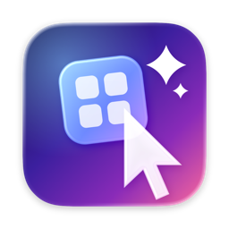
Atelier
Thèmes d'icônes et curseurs animés
Changez l'allure de vos apps et de vos curseurs en un clic, et revenez en arrière quand vous voulez.
Autorisation demandée : Gestion des apps (pour changer l'icône des apps d'autres éditeurs)
- v1.2
- 6,0 Mo
- Universelle (Apple Silicon + Intel)
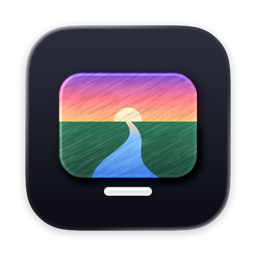
Canal
Lecteur IPTV façon Netflix
Votre propre abonnement IPTV (compte Xtream Codes ou lien M3U) : TV en direct, films, séries, guide TV, reprise à la seconde, « Que regarder ce soir ? ». Clé TMDB gratuite facultative pour les affiches et les notes. Identifiants rangés dans votre trousseau.
Aucune autorisation spéciale.
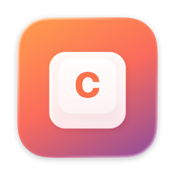
Clac
Le son d'un clavier mécanique à chaque frappe
De vrais claviers enregistrés (Crème, Thock, Tactile, Clicky, Topre, machine à écrire), une latence de quelques millisecondes, et Clac se tait tout seul pendant vos appels. Vit dans la barre des menus.
Autorisation demandée : Surveillance de l'entrée (savoir quelle touche est pressée — rien n'est enregistré)
- v1.3
- 8,9 Mo
- Universelle (Apple Silicon + Intel)
- ⌃⌥⌘K
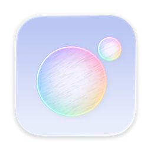
Clair
Nettoyage et entretien du Mac, sans abonnement
Un clic pour vérifier tout le Mac : caches, fichiers oubliés, doublons, applications et leurs restes, mises à jour des apps. Tout part à la Corbeille et se restaure depuis l'Historique. Rangement automatique des téléchargements (désactivé tant que vous ne le choisissez pas), petites alertes discrètes (Corbeille pleine, app figée, disque saturé) et une goutte dans la barre des menus. Tout reste sur votre Mac. Un accueil vous guide au premier lancement.
Autorisation demandée : Accès complet au disque (facultatif, conseillé) : sans lui, macOS cache à Clair la Corbeille, les pièces jointes Mail, les fichiers cloud et une partie de la carte du disque. Clair ne lit jamais vos mails, messages, photos ni mots de passe. À activer dans Réglages Système › Confidentialité et sécurité › Accès complet au disque (l'accueil vous y emmène et voit la coche en direct).
- v3.3
- 18,8 Mo
- Universelle (Apple Silicon + Intel)
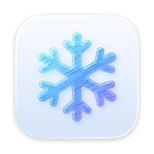
Givre
Rangez la barre des menus
Masquez, réorganisez et regroupez les icônes de la barre des menus. Raccourci ⌃⌥⌘B.
Autorisation demandée : Accessibilité (pour lister les icônes et ouvrir leurs menus)
- v1.3
- 4,8 Mo
- Universelle (Apple Silicon + Intel)
- ⌃⌥⌘B
Halo
Lanceur, IA et outils du Mac au clavier
⌥ Espace pour lancer apps, fichiers, calculs et commandes ; l'IA de votre Mac (ou votre clé, ou un modèle local) ; « Ce que j'ai raté » qui résume vos Messages, WhatsApp et Discord avec des réponses dans votre style ; sélecteur de fenêtres, rangement, captures, gestes et dictée à activer au choix. Un accueil vous guide au premier lancement.
Autorisation demandée : Accessibilité (ranger les fenêtres, coller, lire la sélection) · Enregistrement de l'écran (captures, vignettes des fenêtres — si vous activez ces modules) · Accès complet au disque (« Ce que j'ai raté », vocaux, style — lecture sur le Mac uniquement) · Micro (dictée, seulement pendant que vous dictez)
- v1.3
- 8,8 Mo
- Apple Silicon
- ⌥Espace
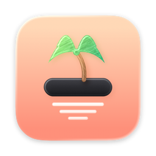
Ilot
Une encoche vivante, comme The Boring Notch
Votre encoche devient un lecteur (pochette, commandes, paroles synchronisées), un HUD du volume et de la luminosité, une étagère de fichiers avec AirDrop, l'agenda du jour et un petit personnage animé (18 au choix). Sans encoche (écran externe, ancien MacBook), Îlot flotte en haut au centre. L'onglet Son pilote le volume et la sortie de chaque app grâce à Onde (à installer aussi). 0 % CPU au repos. Un accueil vous guide au premier lancement.
Autorisation demandée : Agenda et Rappels (si vous gardez le module Agenda) · Accessibilité (pour remplacer les HUD de macOS — facultatif) · Caméra (miroir, seulement si vous l'activez)
- v3.2
- 5,2 Mo
- Universelle (Apple Silicon + Intel)
- ⌃⌥Espace (optionnel)
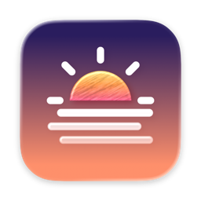
Mirage
Fonds d'écran animés sobres + widgets
Fonds animés anime, paysages, villes et espace (Explorer MoeWalls/MotionBGs, scènes Mirage, import Wallpaper Engine), widgets de bureau en verre, et un panneau dans la barre des menus : aperçu, pause, suivant, favoris. Se met en pause dès que le bureau n'est pas visible. Agenda et rappels demandés seulement si vous ajoutez le widget Agenda.
Aucune autorisation spéciale.
Onde
Le son du Mac, app par app
Volume de 0 à 400 %, sortie et égaliseur pour chaque app, depuis la barre des menus, sans pilote audio. Zéro traitement tant que vous ne réglez rien. Recommandé avec Îlot : son mixeur s'affiche aussi dans l'encoche. Un accueil vous guide au premier lancement.
Autorisation demandée : Enregistrement audio du système (capter le son d'une app pour le régler — rien n'est enregistré)
- v1.3
- 4,4 Mo
- Universelle (Apple Silicon + Intel)
- ⌃⌥⌘O
Orbe
Le navigateur d'Arc, natif et léger
Onglets verticaux, espaces et favoris comme dans Arc, ⌘T pour tout, mode lecture, bloqueur de pubs intégré et assistant IA (l'IA d'Apple de votre Mac, ou votre propre clé). Importe vos favoris, historique, mots de passe et sessions depuis Arc, Chrome ou Safari. Un accueil vous guide au premier lancement.
Autorisation demandée : Caméra et micro (seulement quand un site de visio les demande) · Accès complet au disque (facultatif : importer depuis Safari) · Notifications (seulement pour les sites que vous autorisez)
- v2.4
- 6,0 Mo
- Apple Silicon
- ⌥⌘N (petite fenêtre)
Pastel
Historique du presse-papiers
Retrouvez tout ce que vous avez copié avec ⌘⇧V : textes, images, liens, épinglés et recherchables.
Autorisation demandée : Accessibilité (pour coller à votre place)
- v1.8
- 6,1 Mo
- Universelle (Apple Silicon + Intel)
- ⌘⇧V